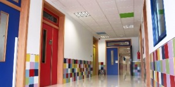

El CES Vega Media es un centro concertado donde la enseñanza es totalmente gratuita,
gestionado por una cooperativa de profesores con vocación por la formación,
que forman una plantilla estable imprescindible para conseguir un verdadero trabajo de equipo.
Filosofía del centro

Hemos crecido y seguimos creciendo por nuestro Proyecto Cooperativo, donde las personas y una fuerte apuesta por un proyecto de calidad, son los elementos fundamentales de nuestra organización.
El C.E.S. Vega Media es un centro dinámico, con una actitud abierta al cambio, siempre buscando nuestro espacio donde compartimos muchas cosas con otras Cooperativas pero donde también tenemos nuestra propia identidad que nos hace diferentes.
Aquí se mezclan la experiencia, madurez y estabilidad que aportan los socios más antiguos, con la frescura y la ilusión que nos traen las últimas generaciones, pero todos con un denominador común: “Seguir trabajando por nuestro Centro, por una mayor calidad en nuestros servicios, siendo flexibles a los cambios constantes de la sociedad para adaptarnos a ellos en las mejores condiciones, y aprovechando la creatividad y la iniciativa que sólo las personas pueden aportar”.
Por todo ello, estamos y seguiremos estando al servicio de nuestra Comunidad Educativa.
El órgano responsable de la alta gestión de la cooperativa, es el Consejo Rector que está formado por seis personas, en las que recaen las funciones de organización y gestión del centro, a nivel empresarial y pedagógico.